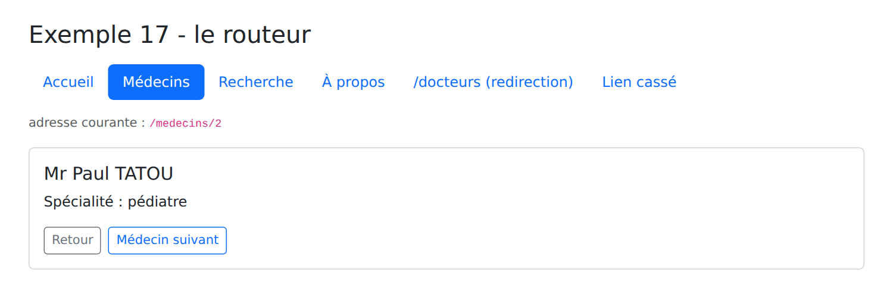
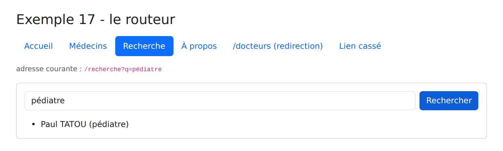
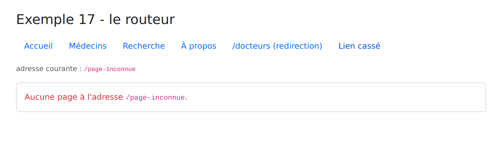
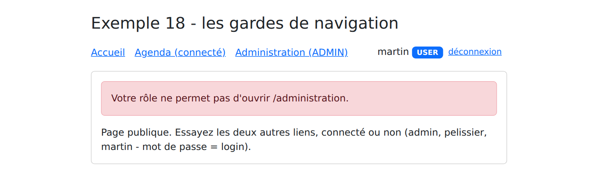

4. Routing
4.1. Example 17: The Router
A [Angular] application is a single-page application: the browser loads only one page, HTML. However, the [RdvMedecins] application has multiple pages (/login, /calendar, /doctors...), each with its own URL, which can be bookmarked or reloaded. This is the role of the [Angular] router: it associates each URL with a component—the “page”—and displays that component when the URL changes, without making any requests to the server.
| 17-routeur/src/
├── app/
│ ├── pages/
│ │ ├── accueil.ts
│ │ ├── liste-medecins.ts
│ │ ├── detail-medecin.ts
│ │ ├── recherche.ts
│ │ ├── a-propos.ts
│ │ └── page-introuvable.ts
│ ├── donnees.ts trois médecins "en dur"
│ ├── app.routes.ts les routes
│ ├── app.config.ts la configuration de l'application
│ ├── app.ts
│ └── app.html
├── index.html
└── main.ts
|
4.1.1. The routes
| // =========================================================================
// 17-router/src/app/app.routes.ts - the ROUTES of the application
// -------------------------------------------------------------------------
// An Angular application is a single-page application (SPA: Single
// Page Application): the browser loads only UNE page HTML. When you
// click an internal link, no request is sent to the server: the
// router changes the address displayed by the browser and replaces the
// component displayed in <router-outlet>.
//
// A route associates a CHEMIN with a COMPOSANT (a "page"):
// 'doctors/:id' :id is a parameter (/doctors/2 -> id = "2");
// '** ' any path: the "page not found" page. The
// paths are tried in order: it appears as DERNIER.
// title: the title of the browser tab when the page is displayed.
// =========================================================================
import { Routes } from '@angular/router';
import { Accueil } from './pages/accueil';
import { ListeMedecins } from './pages/liste-medecins';
import { DetailMedecin } from './pages/detail-medecin';
import { Recherche } from './pages/recherche';
import { PageIntrouvable } from './pages/page-introuvable';
export const routes: Routes = [
{ path: '', component: Accueil, title: 'Accueil' },
{ path: 'medecins', component: ListeMedecins, title: 'Médecins' },
{ path: 'medecins/:id', component: DetailMedecin, title: 'Un médecin' },
{ path: 'recherche', component: Recherche, title: 'Recherche' },
// loading DIFFÉRÉ: the code for this page is downloaded only on the
// first visit (the compiler creates a separate file for it)
{ path: 'a-propos', loadComponent: () => import('./pages/a-propos'), title: 'À propos' },
// a redirect: the old address leads to the new one
{ path: 'docteurs', redirectTo: 'medecins' },
{ path: '**', component: PageIntrouvable, title: 'Page introuvable' },
];
|
- line 24: the routes form an array of objects of type [Routes];
- line 25: the empty path: the home page, at the address /. A / is never placed at the beginning of a path;
- line 27: [:id] is a parameter: /doctors/1, /doctors/2... all display the [DetailMedecin] component, which receives the value of [id];
- line 31: [loadComponent] replaces [component]: the component is loaded only on the first visit to the page. The compiler stores its code in a separate file, which is downloaded at that moment; this speeds up the application’s loading time. We’ll do this for all pages in the case study;
- line 33: a redirect: /docteurs leads to /medecins;
- line 34: [**]: any path. Since paths are tried in order, this one is only used if none of the others work: this is the “page not found” page;
- [title]: the browser tab title when the page is displayed.
4.1.2. Application Configuration
| // =========================================================================
// 17-router/src/app/app.config.ts
// -------------------------------------------------------------------------
// provideRouter (routes): the router is added to the application, along with its
// routes (app.routes.ts). withComponentInputBinding(): the parameters
// address parameters (/doctors/:id, ?q=...) are passed to the page components
// as ENTRÉES (input())—see pages/detail-medecin.ts.
// =========================================================================
import { ApplicationConfig } from '@angular/core';
import { provideRouter, withComponentInputBinding } from '@angular/router';
import { routes } from './app.routes';
export const appConfig: ApplicationConfig = {
providers: [provideRouter(routes, withComponentInputBinding())],
};
|
Until now, the application configuration was contained in the file [main.ts]. It is now stored separately in [app.config.ts], as in projects created by the command [ng new]:
- Line 15: [provideRouter] adds the router to the application, along with its routes. [withComponentInputBinding()] passes the address parameters to the page components as entries ([input()], Example 10): this is the simplest way to read them.
| // =========================================================================
// 17-router/src/main.ts
// -------------------------------------------------------------------------
// The application’s configuration (its “providers”) is stored separately,
// in app.config.ts: this is the standard structure for an Angular project.
// =========================================================================
import { bootstrapApplication } from '@angular/platform-browser';
import { appConfig } from './app/app.config';
import { App } from './app/app';
bootstrapApplication(App, appConfig).catch((erreur) => console.error(erreur));
|
- Line 12: [bootstrapApplication] receives the configuration.
| <!doctype html>
<html lang="fr">
<head>
<meta charset="utf-8">
<title>Exemple 17 - le routeur</title>
<base href="/">
<meta name="viewport" content="width=device-width, initial-scale=1">
</head>
<body>
<app-root></app-root>
</body>
</html>
|
- line 6: [<base href="/">]: the address from which the router calculates the paths. Without it, multi-level addresses (/doctors/2) would not work.
4.1.3. The application shell
The root component becomes a shell: it contains elements common to all pages (in this case, the title and links) and a space where the current page is displayed.
| // =========================================================================
// 17-router/src/app/app.ts—the application’s “shell”
// -------------------------------------------------------------------------
// - routerLink="..." : an internal link. In a <a> tag, it produces a
// valid href, but clicking it does not reload the page: it is the router that
// takes action. routerLinkActive="active" sets the "active" class (the one from
// Bootstrap) on the link of the displayed page;
// - <router-outlet />: the location where the component for the
// current route is displayed.
// =========================================================================
import { Component, inject } from '@angular/core';
import { toSignal } from '@angular/core/rxjs-interop';
import { NavigationEnd, Router, RouterLink, RouterLinkActive, RouterOutlet } from '@angular/router';
import { filter, map } from 'rxjs';
@Component({
selector: 'app-root',
imports: [RouterLink, RouterLinkActive, RouterOutlet],
templateUrl: './app.html',
})
export class App {
private readonly router = inject(Router);
// the current address, in signal form: router.events is a stream
// (Observable, see Example 19) of navigation events; the
// end of each navigation, and toSignal turns it into a signal
protected readonly adresse = toSignal(
this.router.events.pipe(
filter((e) => e instanceof NavigationEnd),
// decodeURIComponent: %C3%A9 becomes active again
map((e) => decodeURIComponent(e.urlAfterRedirects)),
),
{ initialValue: '' },
);
}
|
- line 19: the router directives used by the template;
- lines 28–35: the current URL, displayed below the links. [router.events] is an observable (a stream of events, as shown in Example 19) that signals each step of the navigation. We retain only the endpoints of navigation (line 30), extract the address from them—including any redirects (line 32)—and [toSignal] transforms the stream into a signal that can be used in the template.
| <div class="container py-4">
<h1 class="h3 mb-3">Exemple 17 - le routeur</h1>
<nav class="nav nav-pills mb-3">
<!-- routerLinkActiveOptions correct: "/" should not be active on /doctors -->
<a class="nav-link" routerLink="/" routerLinkActive="active" [routerLinkActiveOptions]="{ exact: true }">Accueil</a>
<a class="nav-link" routerLink="/medecins" routerLinkActive="active">Médecins</a>
<!-- [queryParams]: parameters after the ? (/search?q=generalist);
queryParams: 'ignored' : le lien reste actif quelle que soit la recherche -->
<a class="nav-link" routerLink="/recherche" [queryParams]="{ q: 'généraliste' }" routerLinkActive="active"
[routerLinkActiveOptions]="{ paths: 'exact', queryParams: 'ignored', fragment: 'ignored', matrixParams: 'ignored' }">Recherche</a>
<a class="nav-link" routerLink="/a-propos" routerLinkActive="active">À propos</a>
<a class="nav-link" routerLink="/docteurs">/docteurs (redirection)</a>
<a class="nav-link" routerLink="/page-inconnue">Lien cassé</a>
</nav>
<p class="small text-muted">adresse courante : <code>{{ adresse() }}</code></p>
<div class="card p-3">
<router-outlet />
</div>
</div>
|
- Line 5: [routerLink]: an internal link. For a [<a>] tag, it generates a valid [href] attribute (the link can be opened in a new tab), but clicking it does not reload the page: the router is what changes the address and the display. [routerLinkActive="active"] applies the [active] class (derived from [Bootstrap]) to the link on the displayed page. Without the [exact] option, the / link would be active on all pages, since all addresses begin with /;
- lines 9–10: [[queryParams]]: the parameters placed after the [?] in the URL (/search?q=generalist). The [queryParams: 'ignored'] option keeps the link active regardless of the search;
- lines 12–13: a link to the redirect, and a link to an address that does not exist;
- line 17: [<router-outlet />]: the location where the current route component is displayed.
4.1.4. The pages
| // "hard-coded" data, so as not to depend on a server in this example
export interface Medecin {
id: number;
titre: string;
prenom: string;
nom: string;
specialite: string;
}
export const MEDECINS: Medecin[] = [
{ id: 1, titre: 'Mme', prenom: 'Marie', nom: 'PELISSIER', specialite: 'généraliste' },
{ id: 2, titre: 'Mr', prenom: 'Paul', nom: 'TATOU', specialite: 'pédiatre' },
{ id: 3, titre: 'Melle', prenom: 'Sophie', nom: 'DUPONT', specialite: 'généraliste' },
];
|
| import { Component } from '@angular/core';
@Component({
selector: 'app-accueil',
template: `
<p class="mb-0">Bienvenue. Cliquez sur les liens : l'adresse du navigateur change, la page n'est jamais
rechargée (ouvrez l'onglet Réseau des outils de développement pour le vérifier). Les boutons Précédent et
Suivant du navigateur fonctionnent, ainsi que le rechargement (F5) de n'importe quelle page.</p>
`,
})
export class Accueil {}
|
A page is a regular component. There is nothing special about it.
| // 17-router/src/app/pages/liste-medecins.ts - links with parameters
import { Component } from '@angular/core';
import { RouterLink } from '@angular/router';
import { MEDECINS } from '../donnees';
@Component({
selector: 'app-liste-medecins',
imports: [RouterLink],
template: `
<ul class="mb-0">
@for (m of medecins; track m.id) {
<!-- [routerLink] with an array: the router constructs the address /doctors/2 -->
<li><a [routerLink]="['/medecins', m.id]">{{ m.titre }} {{ m.prenom }} {{ m.nom }}</a></li>
}
</ul>
`,
})
export class ListeMedecins {
protected readonly medecins = MEDECINS;
}
|
- Line 13: [[routerLink]] receives an array here: the router assembles the address from its elements (/doctors/2).
| // =========================================================================
// 17-router/src/app/pages/detail-medecin.ts - a page with a parameter
// -------------------------------------------------------------------------
// The :id parameter arrives as ENTRÉE (via withComponentInputBinding,
// see app.config.ts), in string form: simply declare an
// entry with the same name. The component then no longer depends on the
// router: it could also be used as <app-detail-medecin id="2">.
// Router.navigate(...): navigate to PAR LE CODE; Location.back() : go back
// to the previous page, like the browser’s Back button.
// =========================================================================
import { Component, computed, inject, input } from '@angular/core';
import { Location } from '@angular/common';
import { Router } from '@angular/router';
import { MEDECINS } from '../donnees';
@Component({
selector: 'app-detail-medecin',
template: `
@if (medecin(); as m) {
<h2 class="h5">{{ m.titre }} {{ m.prenom }} {{ m.nom }}</h2>
<p>Spécialité : {{ m.specialite }}</p>
<div class="d-flex gap-2">
<button class="btn btn-sm btn-outline-secondary" (click)="retour()">Retour</button>
<button class="btn btn-sm btn-outline-primary" (click)="suivant()">Médecin suivant</button>
</div>
} @else {
<p class="text-danger mb-0">Le médecin n° {{ id() }} n'existe pas.</p>
}
`,
})
export class DetailMedecin {
readonly id = input.required<string>();
private readonly router = inject(Router);
private readonly location = inject(Location);
// computed: if you navigate from /doctors/1 to /doctors/2, Angular RÉUTILISE
// the same component and only changes the id property—the computed property updates accordingly
protected readonly medecin = computed(() => MEDECINS.find((m) => m.id === Number(this.id())) ?? null);
protected retour(): void {
this.location.back();
}
protected suivant(): void {
const id = (Number(this.id()) % MEDECINS.length) + 1;
this.router.navigate(['/medecins', id]);
}
}
|
- line 33: the route parameter [:id] is passed to the entry with the same name. Like everything that comes from an address, it is a string;
- line 39: The displayed doctor is calculated from the entry. When switching from /doctors/1 to /doctors/2, [Angular] does not recreate the component: it only changes the value of the entry, and [computed] follows;
- lines 27–29: an unknown identifier (/doctors/9) is reported;
- line 42: [Location.back()]: return to the previous page, as with the browser’s Back button;
- line 47: [Router.navigate]: navigation triggered by the code, with the same array as [[routerLink]].
| // =========================================================================
// 17-router/src/app/pages/recherche.ts - a page driven by the URL
// -------------------------------------------------------------------------
// /search?q=pediatrician: as with the GET form from the NestJS course, the
// page is fully described by its address: you can bookmark it
// bookmark, reload it, or go back. The "q" parameter is also
// as well, as an input to the component.
// =========================================================================
import { Component, computed, inject, input, linkedSignal } from '@angular/core';
import { FormsModule } from '@angular/forms';
import { Router } from '@angular/router';
import { MEDECINS } from '../donnees';
@Component({
selector: 'app-recherche',
imports: [FormsModule],
template: `
<form class="d-flex gap-2 mb-3" (ngSubmit)="rechercher()">
<input name="saisie" class="form-control" placeholder="nom ou spécialité" [(ngModel)]="saisie">
<button class="btn btn-primary">Rechercher</button>
</form>
<ul class="mb-0">
@for (m of resultats(); track m.id) {
<li>{{ m.prenom }} {{ m.nom }} ({{ m.specialite }})</li>
} @empty {
<li class="text-muted">Aucun résultat.</li>
}
</ul>
`,
})
export class Recherche {
readonly q = input<string>(); // ?q=... (undefined if absent)
private readonly router = inject(Router);
// the field starts with the value of URL and updates to it if it changes
// (Back button), while remaining editable: a linkedSignal
protected readonly saisie = linkedSignal(() => this.q() ?? '');
protected readonly resultats = computed(() => {
const q = (this.q() ?? '').toLowerCase();
return MEDECINS.filter((m) => `${m.prenom} ${m.nom} ${m.specialite}`.toLowerCase().includes(q));
});
protected rechercher(): void {
// The URL is changed; the display follows the URL (q input)
this.router.navigate(['/recherche'], { queryParams: { q: this.saisie() } });
}
}
|
This page is fully described by its address, just like that of a form GET: you can bookmark it, reload it, or return to it using the Back button.
- Line 33: The parameter [q] from the address is also passed as an input; if it is missing, its value is [undefined];
- line 38: the input field is a [linkedSignal]: it takes the value of the address, updates accordingly when the address changes (using the Back button), but remains editable by the user;
- Lines 40–43: The results depend on the address, not on the input: they only change when the form is submitted;
- line 47: submitting the form changes the address, which changes the [q] entry, which changes the results.
| // 17-router/src/app/pages/a-propos.ts - a page loaded on demand
// "export default": loadComponent: () => import('./pages/about') finds
// the component without having to specify its name
import { Component } from '@angular/core';
@Component({
selector: 'app-a-propos',
template: `<p class="mb-0">Cette page a été téléchargée à la première visite (onglet Réseau : un fichier
chunk-XXXX.js). Son titre d'onglet vient de la route.</p>`,
})
export default class APropos {}
|
- line 11: [export default]: the [loadComponent] function in the route ([import('./pages/a-propos')]) finds the component without having to specify its name.
| import { Component, inject } from '@angular/core';
import { Router } from '@angular/router';
@Component({
selector: 'app-page-introuvable',
template: `<p class="text-danger mb-0">Aucune page à l'adresse <code>{{ adresse }}</code>.</p>`,
})
export class PageIntrouvable {
protected readonly adresse = inject(Router).url;
}
|
- Line 9: [Router.url]: the requested address.
4.1.5. Execution
[npm start 17-routeur]; click on “Doctors,” then on “Paul” TATOU:

Click on “Search,” type “pediatrician,” and press Enter: the address changes.

The broken link leads to a "page not found" error:

You can verify in the Network tab of the browser’s developer tools that no page is requested from the server when you click, except on the first visit to the “About” page (a file named [chunk-XXXX.js]). You can also reload any page (F5): the development server always returns [index.html], and the router displays the page corresponding to the address. A production server must do the same: this is what the server JSON will do during deployment.
4.2. Example 18: Navigation Guard Pages
Certain pages in the [RdvMedecins] application are restricted: the calendar requires a login, and doctor management requires the ADMIN role. On the server side, the [NestJS] course used access controls ([JwtAuthGuard], [RolesGuard]). The [Angular] router has its own: functions called before displaying a route, which can either allow navigation or redirect it to another address.
This example simulates the connection without a server: three accounts are hard-coded.
| 18-gardes/src/app/
├── pages/
│ ├── accueil.ts page publique
│ ├── connexion.ts page publique
│ ├── agenda.ts exige d'être connecté
│ └── administration.ts exige le rôle ADMIN
├── session.service.ts l'utilisateur connecté
├── gardes.ts les gardes
├── app.routes.ts
├── app.config.ts
├── app.ts
└── app.html
|
4.2.1. The session
| // =========================================================================
// 18-gardes/src/app/session.service.ts - a SIMULÉE session (serverless)
// -------------------------------------------------------------------------
// The logged-in user, in a root service: all components and
// all guards that inject it share the same one. (Example 23 will demonstrate the
// the same thing with a real server.)
// =========================================================================
import { Injectable, signal } from '@angular/core';
export type Role = 'ADMIN' | 'DOCTOR' | 'USER';
export interface Utilisateur {
login: string;
role: Role;
}
// three "hard-coded" accounts (password = login)
const COMPTES: Record<string, Role> = { admin: 'ADMIN', pelissier: 'DOCTOR', martin: 'USER' };
@Injectable({ providedIn: 'root' })
export class SessionService {
private readonly _utilisateur = signal<Utilisateur | null>(null);
readonly utilisateur = this._utilisateur.asReadonly();
connecter(login: string, password: string): boolean {
const role = Object.hasOwn(COMPTES, login) ? COMPTES[login] : undefined;
if (role === undefined || password !== login) {
return false;
}
this._utilisateur.set({ login, role });
return true;
}
deconnecter(): void {
this._utilisateur.set(null);
}
}
|
- Line 11: the three roles of the [RdvMedecins] application;
- line 19: three accounts, each with a password equal to the username;
- lines 23–24: the logged-in user ([null] if there is none), in a signal that only the service can modify. Since there is only one service, the components and guards that inject it all see the same user;
- line 27: [Object.hasOwn]: only the keys specific to the [COMPTES] object are retained. Without this precaution, the “constructor” login would find a property inherited from all [JavaScript] objects;
- Lines 26–33: The login succeeds if the account exists and the password is correct.
4.2.2. The guards
| // =========================================================================
// 18-guards/src/app/gardes.ts - navigation GARDES
// -------------------------------------------------------------------------
// A guard (CanActivateFn) is a function that the router calls AVANT
// to display a route that declares it (canActivate: [...]). It returns:
// - tru e : navigation continues;
// - a UrlTree (an address generated by router.createUrlTree):
// navigation is replaced by a redirect to this address.
// A guard can inject services: it runs in the
// application’s injection context.
//
// This is the client-side equivalent of the NestJS (JwtAuthGuard,
// RolesGuard) — with one difference: FONDAMENTALE. A client guard is
// merely a convenience. The client code is in the hands of the user, who
// can change it at will. True data protection remains that
// provided by SERVEUR (see the chapter on the black box).
// =========================================================================
import { inject } from '@angular/core';
import { CanActivateFn, Router } from '@angular/router';
import { Role, SessionService } from './session.service';
// The page requires you to be logged in
export const connexionRequise: CanActivateFn = (_route, etat) => {
if (inject(SessionService).utilisateur() !== null) {
return true;
}
// not logged in: on the login page, remember where you wanted to go
return inject(Router).createUrlTree(['/connexion'], { queryParams: { redirect: etat.url } });
};
// the page requires one of the roles listed in the route data (data.roles)
export const roleRequis: CanActivateFn = (route, etat) => {
const roles = route.data['roles'] as Role[];
const utilisateur = inject(SessionService).utilisateur();
if (utilisateur !== null && roles.includes(utilisateur.role)) {
return true;
}
// logged in, but not with the correct role: redirect to the home page, with an explanation
return inject(Router).createUrlTree(['/'], { queryParams: { refus: etat.url } });
};
|
- line 24: A guard is a function of type [CanActivateFn]. The router passes it the route to activate and the navigation state (which contains the requested address, [etat.url]);
- line 25: A guard can inject services, using [inject], as a component;
- line 26: [true]: navigation continues;
- line 29: otherwise, the guard returns another address, generated by [createUrlTree]: navigation is replaced by a redirect to the login page. The parameter [redirect] retains the requested page, to return to it after login;
- line 34: [route.data]: the free data declared by the route (here, the authorized roles). The same guard is thus used for all restricted pages, regardless of their roles;
- line 40: A logged-in user whose role is not appropriate is redirected to the home page, along with the reason for denial.
The comments in lines 12–16 are essential: a client-side validator is merely a convenience for the user, saving them from opening a page that might not work. The client-side code runs in the browser; the user can read and modify it. Data protection remains the responsibility of the server, which verifies permissions with each request.
4.2.3. Protected Routes
| // =========================================================================
// 18-gardes/src/app/app.routes.ts - PROTÉGÉES routes
// -------------------------------------------------------------------------
// - canActivate: the checkpoints to pass through, in order;
// - dat a : free-form information associated with the route (here, the
// authorized roles), which the guard reads.
// =========================================================================
import { Routes } from '@angular/router';
import { connexionRequise, roleRequis } from './gardes';
import { Accueil } from './pages/accueil';
import { Connexion } from './pages/connexion';
import { Agenda } from './pages/agenda';
export const routes: Routes = [
{ path: '', component: Accueil },
{ path: 'connexion', component: Connexion },
{ path: 'agenda', component: Agenda, canActivate: [connexionRequise] },
{
path: 'administration',
// deferred loading: the code is downloaded only after the checkpoints have been passed
loadComponent: () => import('./pages/administration'),
canActivate: [connexionRequise, roleRequis],
data: { roles: ['ADMIN'] },
},
{ path: '**', redirectTo: '' },
];
|
- line 18: [canActivate]: the list of route guards;
- line 22: the administration page is loaded on demand: its code is downloaded only if the guards authorize it;
- line 23: two guards, called in order: first, be logged in; second, have the correct role;
- line 24: the authorized roles, read by guard [roleRequis];
- line 26: any unknown address redirects to the home page.
| import { ApplicationConfig } from '@angular/core';
import { provideRouter, withComponentInputBinding } from '@angular/router';
import { routes } from './app.routes';
export const appConfig: ApplicationConfig = {
providers: [provideRouter(routes, withComponentInputBinding())],
};
|
The configuration is the same as in the previous example.
4.2.4. The pages
| // =========================================================================
// 18-guards/src/app/pages/connexion.ts
// -------------------------------------------------------------------------
// After logging in, the user is redirected to the page they wanted
// to open (the ?redirect=... parameter set by the guard), or to the home page.
// router.navigateByUrl: navigate to a full URL (/agenda?x=1).
// =========================================================================
import { Component, inject, input, signal } from '@angular/core';
import { FormsModule } from '@angular/forms';
import { Router } from '@angular/router';
import { SessionService } from '../session.service';
@Component({
selector: 'app-connexion',
imports: [FormsModule],
template: `
@if (redirect()) {
<p class="alert alert-warning">Connectez-vous pour ouvrir {{ redirect() }}.</p>
}
<form class="d-flex flex-wrap gap-2" (ngSubmit)="valider()">
<input name="login" class="form-control w-auto" placeholder="login" autocomplete="username" [(ngModel)]="login">
<input name="password" type="password" class="form-control w-auto" placeholder="mot de passe"
autocomplete="current-password" [(ngModel)]="password">
<button class="btn btn-primary">Se connecter</button>
</form>
@if (erreur()) {
<p class="text-danger mt-2 mb-0">Login ou mot de passe incorrect.</p>
}
`,
})
export class Connexion {
readonly redirect = input<string>();
private readonly session = inject(SessionService);
private readonly router = inject(Router);
protected readonly login = signal('');
protected readonly password = signal('');
protected readonly erreur = signal(false);
protected valider(): void {
this.erreur.set(!this.session.connecter(this.login().trim(), this.password()));
if (!this.erreur()) {
const redirect = this.redirect();
// Only a path like INTERNE is accepted: it starts with /, but not with //
// (//site.com/... refers to a AUTRE site) — no redirection to another site
const interne = redirect !== undefined && redirect.startsWith('/') && !redirect.startsWith('//');
this.router.navigateByUrl(interne ? redirect : '/');
}
}
}
|
- Line 33: The parameter [redirect], placed in the address by the guard, is received;
- lines 18–20: it is displayed to the user;
- line 41: the connection;
- lines 43–47: if successful, the user is redirected to the requested page ([navigateByUrl] accepts a full URL, including parameters) or to the home page. The parameter [redirect] comes from the URL: anyone can create a link to /login?redirect=//site-pirate.com. Line 46 therefore only accepts a path internal to the application.
| import { Component, input } from '@angular/core';
@Component({
selector: 'app-accueil',
template: `
<!-- ?refus=...: submitted by the guard roleRequis when the role is not appropriate -->
@if (refus()) {
<p class="alert alert-danger">Votre rôle ne permet pas d'ouvrir {{ refus() }}.</p>
}
<p class="mb-0">Page publique. Essayez les deux autres liens, connecté ou non (admin, pelissier, martin -
mot de passe = login).</p>
`,
})
export class Accueil {
readonly refus = input<string>();
}
|
- Line 15: the reason for a denial, submitted by the guard [roleRequis].
| import { Component, inject } from '@angular/core';
import { SessionService } from '../session.service';
@Component({
selector: 'app-agenda',
template: `<p class="mb-0">L'agenda de <strong>{{ session.utilisateur()?.login }}</strong> : cette page exige d'être connecté.</p>`,
})
export class Agenda {
protected readonly session = inject(SessionService);
}
|
| import { Component } from '@angular/core';
@Component({
selector: 'app-administration',
template: `<p class="mb-0">Administration : page réservée au rôle ADMIN, chargée à la demande (onglet Réseau :
son fichier chunk-XXXX.js n'est téléchargé qu'à la première visite).</p>`,
})
export default class Administration {}
|
4.2.5. The typo
| import { Component, inject } from '@angular/core';
import { Router, RouterLink, RouterLinkActive, RouterOutlet } from '@angular/router';
import { SessionService } from './session.service';
@Component({
selector: 'app-root',
imports: [RouterLink, RouterLinkActive, RouterOutlet],
templateUrl: './app.html',
})
export class App {
protected readonly session = inject(SessionService);
private readonly router = inject(Router);
protected seDeconnecter(): void {
this.session.deconnecter();
this.router.navigate(['/']);
}
}
|
| <div class="container py-4" style="max-width: 720px">
<h1 class="h3 mb-3">Exemple 18 - les gardes de navigation</h1>
<nav class="d-flex gap-3 align-items-center mb-3">
<a routerLink="/" routerLinkActive="fw-bold" [routerLinkActiveOptions]="{ exact: true }">Accueil</a>
<a routerLink="/agenda" routerLinkActive="fw-bold">Agenda (connecté)</a>
<a routerLink="/administration" routerLinkActive="fw-bold">Administration (ADMIN)</a>
<span class="ms-auto">
@if (session.utilisateur(); as u) {
{{ u.login }} <span class="badge text-bg-primary">{{ u.role }}</span>
<button class="btn btn-sm btn-link" (click)="seDeconnecter()">déconnexion</button>
} @else {
<a routerLink="/connexion">connexion</a>
}
</span>
</nav>
<div class="card p-3"><router-outlet /></div>
</div>
|
- Lines 8–13: the logged-in user and their role, or a link to the login page;
- line 10: logging out returns the user to the home page (app.ts, lines 14–17).
4.2.6. Execution
[npm start 18-gardes]; without being logged in, click on Administration: the guard [connexionRequise] redirects to the login page, while retaining the requested page.

Log in as martin, who has the role USER: after logging in, you are redirected to /administration; this time, the guard [roleRequis] denies navigation.

When logged in as admin, the same link opens the administration page.